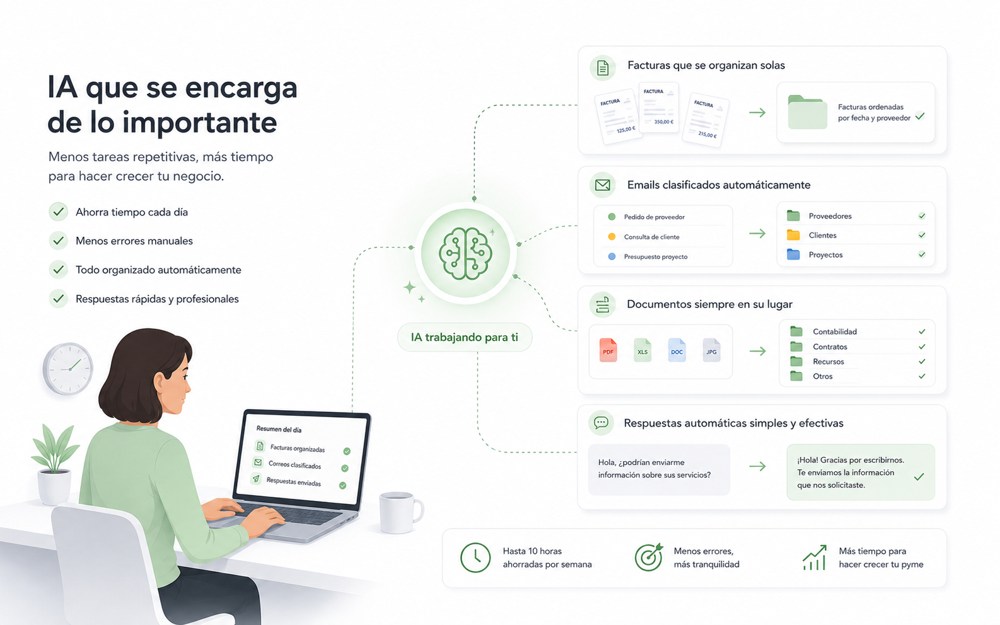
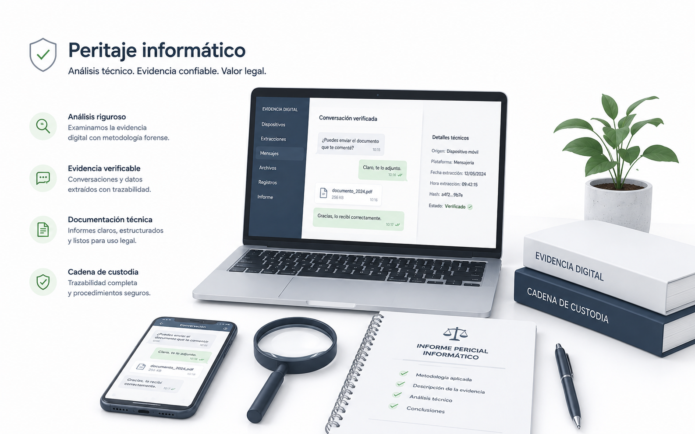

Automatización con IA para empresas
Uso inteligencia artificial para automatizar tareas repetitivas, organizar información, leer documentos y responder consultas de forma más ágil.
Sobre mí
Soy Gerardo Tous Vallespir, desarrollador senior con más de 15 años de experiencia en desarrollo de software, automatización e integración de sistemas. Mi enfoque es claro: convertir procesos complejos en soluciones simples que aporten resultados reales.
Trabajo de forma cercana, escuchando cada caso y proponiendo mejoras realistas. Me implico en cada proyecto para que la tecnología te aporte tranquilidad, productividad y control, no complicaciones.
Mi trabajo en peritaje informático se apoya en formación especializada, criterio técnico y una metodología rigurosa para ofrecer análisis claros y útiles a empresas, abogados y particulares.
Automatización inteligente para empresas reales
Ayudo a pequeñas y medianas empresas a trabajar mejor con soluciones claras, útiles y fáciles de usar. Menos trabajo manual, menos errores y más tiempo para lo importante.
Mallorca | Trabajo con clientes de toda España
Servicios
Uso inteligencia artificial para automatizar tareas repetitivas, organizar información, leer documentos y responder consultas de forma más ágil.
Desarrollo herramientas personalizadas para que tu equipo trabaje con procesos más simples, claros y eficientes.
Conecto programas y plataformas para evitar trabajo manual entre sistemas y reducir errores en el día a día.
Realizo análisis e informes sobre pruebas digitales: WhatsApp, autenticidad de conversaciones, fraude digital y evidencias tecnológicas.
IA para pymes
La inteligencia artificial puede ayudarte a hacer en minutos tareas que antes llevaban horas, sin complicar tu forma de trabajar.
"La inteligencia artificial no sustituye tu negocio. Te ayuda a trabajar más rápido y con menos esfuerzo."

Desarrollo de software
No todas las empresas funcionan igual. Por eso desarrollo soluciones de software adaptadas exactamente a cómo trabajas tú: sin complicaciones, sin tecnología innecesaria y sin depender de herramientas genéricas que no encajan.
Cuéntame tu proyectoHerramientas propias para gestionar pedidos, presupuestos, clientes o cualquier proceso que ahora haces en Excel o a mano.
Conecto tu tienda online, tu CRM, tu ERP o cualquier programa para que los datos fluyan solos y no tengas que copiarlos a mano.
Identifico las tareas repetitivas de tu empresa y las automatizo para que tu equipo dedique el tiempo a lo que realmente aporta valor.
Dashboards y reportes que se actualizan solos para que siempre tengas la información clave de tu negocio de un vistazo.
Entendemos juntos qué necesitas sin tecnicismos.
Te explico qué voy a hacer, cuánto cuesta y cuándo estará listo.
Construyo la solución y te muestro avances para que valides en todo momento.
Te entrego todo funcionando y te acompaño en los primeros pasos.
Peritaje informático
Un perito informático analiza evidencias digitales y elabora informes técnicos que pueden utilizarse en procesos judiciales, reclamaciones o investigaciones. Mis informes son claros, estructurados y comprensibles para abogados, jueces y particulares.
En proceso de colegiación como perito informático

Verifico la autenticidad de conversaciones de WhatsApp, Telegram u otras plataformas para determinar si han sido manipuladas o son originales.
Analizo casos de fraude online, suplantación de identidad, phishing y estafas digitales, aportando evidencias técnicas para reclamaciones legales.
Compruebo si un documento digital, correo electrónico, imagen o archivo ha sido alterado o manipulado.
Redacto informes periciales claros, con metodología documentada y listos para presentarse ante un tribunal.
Apoyo a despachos de abogados con análisis técnico en casos que involucran pruebas digitales, sistemas informáticos o delitos tecnológicos.
Examino ordenadores, móviles u otros dispositivos para recuperar, analizar y documentar información relevante para un caso.
Contacto
Si quieres mejorar procesos, ahorrar tiempo o revisar un caso de evidencia digital, hablamos sin compromiso y valoramos la mejor opción para tu empresa.
Escribirme por WhatsAppEmail: gerardotous@gmail.com
Teléfono / WhatsApp: +34 630 122 174
LinkedIn: Perfil profesional
Ubicación: Mallorca (clientes en toda España)